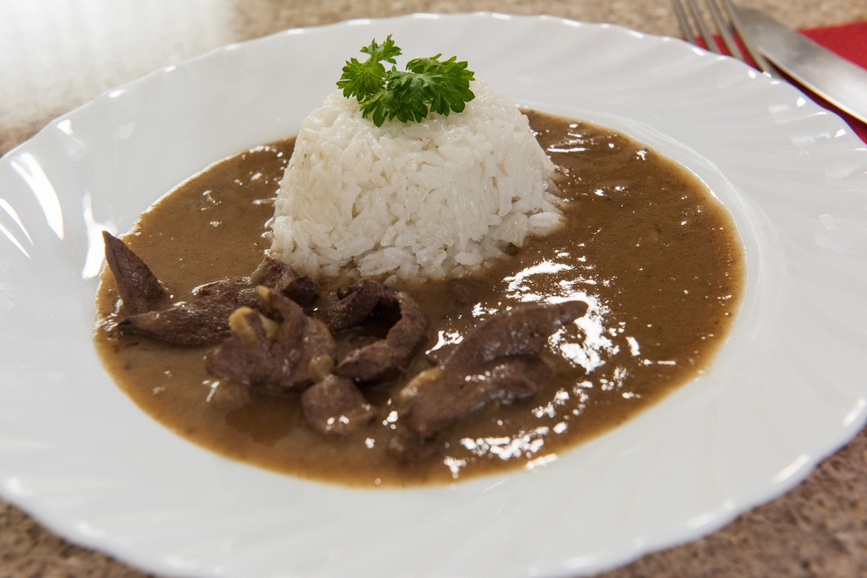

Jednoduché a rychlé jídlo, které je oblíbené pro svou jemnou chuť a výbornou šťávu. Skvěle se hodí s rýží.
Rýži několikrát propláchneme, scedíme a dáme do hrnce se silným dnem. Zalijeme horkou vodou, přidáme olej a sůl. Přivedeme k varu, zakryjeme a necháme dusit do změknutí. Hotovou rýži promícháme vidličkou.
Cibuli oloupeme a nakrájíme nadrobno. Játra opláchneme a nakrájíme na větší kusy.
Na rozpáleném sádle orestujeme cibuli dozlatova. Přidáme játra, okořeníme pepřem a drceným kmínem a krátce orestujeme.
Přilijeme trochu vývaru a velmi krátce podusíme. Mouku rozmícháme v troše studené vody a vlijeme do pánve. Vše pozvolna provaříme 15 minut, občas promícháme.
Podle potřeby přidáme vývar nebo mouku pro požadovanou konzistenci. Až nakonec osolíme dle chuti.
Podáváme s vařenou rýží.